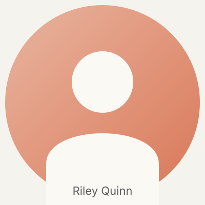

Senior Product Designer. Berlin. Nine years in.
I'm a product designer who works on SaaS — B2B and B2C, with a soft spot for the surfaces that have to sell themselves and ship every week.
My foundation: experience and execution belong together. The work isn't done in Figma — it's done when a PM can demo it, a CS lead can quote a metric off it, and a customer can self-serve through it without help.
I'm most at home working end-to-end across a product. I started with small SaaS clients, shipped a B2C habit-tracker solo for a couple of years, then went deep on B2B feedback infrastructure. The thread across all of it: design that compresses time-to-value, in environments where attention is borrowed.
Looking for a senior IC role where design is treated as part of how the product thinks — not the final layer on top, but part of the team's reasoning. Bonus points for a product surface that ships in code, not in handoff.
Open to senior IC roles, contract work, and conversations with teams shipping B2B or B2C SaaS. Contact details below are samples for this public demo.